Chapter-6
西南典藏·下一站，天堂
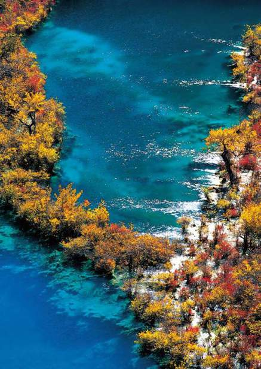
四川
Sichuan·天府之国
四川，一个凝聚着多重性格的地方：或是泼辣、或是妩媚、或是刚劲、或是轻柔、或是外放、或是内敛……每一种性格的外露，都有着说不出的迷人。
九寨沟
Jiuzhaigou Valley
如 梦 如 幻
九寨沟就像一个梦境，承载着人间所能想象的美丽。它仿佛如一幕长幅画卷，把世间装点得美丽绝伦……
传说，很久很久以前，在色嫫女神山下，一对相亲相爱的藏族男女不小心摔坏了他们的定情信物——一面宝镜，镜子的碎片散落在九寨的丛林里，形成了而今的108个海子。这些美丽的海子，用它的水汁富饶着这方土地，用它的色彩充盈着每颗心灵，使得周围的一切都美得那么从容和安然，美得容不下一丝忧郁和躁动。
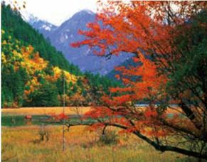
色彩是这里的主导：红色、黄色、绿色、白色……绚烂无比。
水是九寨的魂。大大小小100多处翠海，40多处泉，数十处峡谷、瀑布，形成了一个小小的九寨缩影画。树正瀑布是九寨的水中最瞩目的一个，由大大小小的40多处海子组成，大的深者10米上下，小的浅者1米左右，个个相连，构成梯状湖泊。树正瀑布不算太大，水从山间小林里缓缓流出，如丝如纱，瀑底水雾缭绕，显得温馨而安宁；古老的水磨房，在小溪边悠悠转动，似乎在向人们诉说着古老的神话。
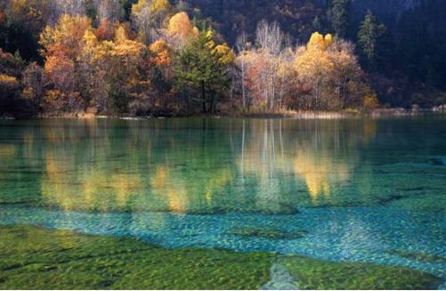
人的眼睛永远也无法穷尽九寨沟的美，因为它的美是变换的，无穷无尽的。
五花海有“九寨一绝”和“九寨精华”的美誉。深秋时节，五花海以最亮丽的服饰出现在世人面前——湛蓝、墨绿、翠黄、粉红、嫩白……它们各自在灿烂的阳光中交相辉映，一片片地向着四周蔓延开来，姿色撩人。五花海有如拥有双重性格的女子，有着磐石般的沉静，也有着夏花般的绚烂，时而静得像一面镜子，时而又律动如欢快的舞者，神秘莫测。风吹浪动，阳光下的海面上朵朵火花闪动，像是朵朵盛开的生命。
顺着五花海的栈道迂回而下，便是雄伟壮观的珍珠滩瀑布。珍珠滩瀑布是九寨沟所有激流中水色最美、水势最猛、水声最大的一段。水流倾泻而下，像一匹匹白色的绸缎，密密稠稠地从悬崖上倒挂下来，落在地面，溅起朵朵跳跃的浪花，像晶莹、洁白的珍珠散落了一地……
水天相接的犀牛海，低头便可见到森林，野花、蓝天、白云的海子，在缥缈的云雾中如梦如幻。当年骑着犀牛把生命交给犀牛海的藏族老喇嘛，可否听见后人的呼唤？轻轻掬一捧甘甜的海水，心灵突地变得如此的清澈和透明。
美丽而孤傲的长海，是九寨沟最长最大的海子，也是九寨里最接近天堂的海子。在白云流走的蓝天下，纵然四周山峰耸立，长海依旧若无其事地展示着它的美丽——湖水碧蓝晶莹，翠蓝是浓，却浓而不艳；碧柔是清，却柔而不媚；清馨是净，却净而不寂，尽显深沉而神秘的气质。岸边静静站立的独臂松，据说是一个为救少女而被恶龙抓掉左臂的老猎人，他已在此凝望这幽深宁静的湖水数千年，经过数千年的沧桑，已积淀成长海最美丽的一道风景线，让无数朝圣的脚步在此驻足流连。面对着长海的孤寂深邃，独臂松的神秘坚忍，也许压抑在你内心的烦恼顿消，心境也会变得空远宁静。
如果说山是九寨沟的脊梁，那么水就是它的灵魂，是水孕育了九寨的美艳。
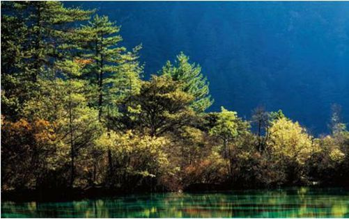
五彩池是被遗散在丛林中最小的一块碎片，也是被色嫫女神捧在掌心里最美的一块翡翠，嵌藏在这深幽的山谷中。传说五彩池曾是仙女的洗脸池，她的胭脂粉将水染上了5种不同的颜色，使这里的水质黛兰、翠绿、靛青，晶莹剔透，清澈如明镜，斑斓如五彩，轻风微拂，变幻无穷。五彩池小小的，柔柔的，像是诗人在诉说着满腹切切的诗意，又似一位飘飘而来的仙子，不染纤尘，傲然而立。五彩池，以其五彩斑斓，通体晶莹剔透，让人既惊又叹，既爱又怜，甚至不忍碰它一下，好像一碰，这美一下就会没有了。伴守着隐士高洁的梦境，映入池心的青山秀水中，在浅浪微波里摇摆不定……
镜海，是被那相恋的藏族男女摔坏的宝镜中最完整的一块，在它平静的容颜中，可以倒映出天空的本色，森林的本色，雪山的本色，花草的本色，甚至是，阳光的本色，一切都那么清晰，又都那么的梦幻。时而，一阵湛蓝，时而，一阵海绿，然后又相互浸染，斑驳陆离，就像是颜色的仙子在调皮地追逐、嬉闹。
诺日朗瀑布位于九寨沟的心脏部位，是九寨沟的象征和标志，湖水从长满树木的悬崖上分成无数股水流飞泻而下，瀑底水雾迷漫，异常壮观美丽。奔流而下、生生不息的诺日朗，成为了九寨的血液和灵魂，以磅礴的身躯、震天的吼声抒泄着他特有的粗犷与豪迈，风霜雨雪，日夜轮回。
尽管九寨如梦，如幻，如诗，如画，有着刹那的朦胧与恍惚，但她却是一个风韵古朴的人间天堂。只有去过九寨的人，才能明白那份由心而生的倾心与感动。
如梦如幻的景象，很有可能一切都是在梦中？
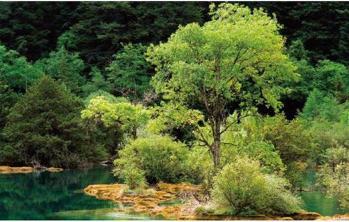
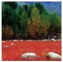
红草地、绿树、白石，亚丁是一个说不尽的地方……
稻城亚丁
Yading of daocheng
天 堂 的 颜 色
在川西的大地上，有这样一个神奇的地方，那里有雪山，有湖泊，有草地，有着你能想象的各种美，而且天堂里有的颜色，在这里你都可以看见。这个地方就是稻城。
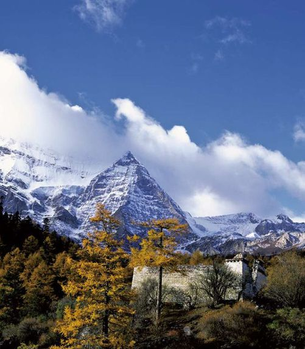
白云下的雪山，雪山下的林木，亚丁用它自己的语言亮丽于世。
稻城亚丁，古名“稻坝”，位于四川西南边缘，甘孜藏族自治州南部，在藏语中是“山谷沟口、开阔之地”的意思。它是唯一可以与香格里拉相媲美的地方。
亚丁身处高原，境内最高海拔6032米，最低海拔2000米，东接凉山州木里县，西临云南的香格里拉，是由贡嘎雪山和海子山组成的绝美之地。海子山是喜马拉雅山造山运动留给人类的礼物，在这片方圆3000多平方千米的大地上，嶙峋怪石与大小海子星罗棋布，仿佛是天使与魔鬼战斗后的猎场，有着恣意张狂的任性，也有着温和如玉般的美丽。
在海子山叠叠层层的山体中，1145个高山湖泊就如上帝失手撒下的钻石般闪烁其间，它们碧蓝如玉，晶莹剔透，静静地散发着一种纯净的气息。湖边石畔偶尔有毛茸茸的小草和不知名的小花摇曳着，显示着生命惊心动魄的美丽。
或许对于美丽的亚丁而言，海子山永远只能是路边的风景，但就是这些匆匆的目光、浅浅的脚印，留给了海子山最深沉的记忆。一个人的心灵能走多远，能飞多高，来到海子山，你就会明白……
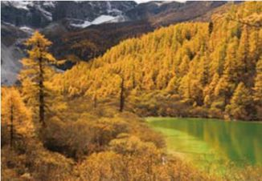
亚丁的秋天，透出灿灿的美。
在稻城，青杨是一道美丽的风景。或许是由于稻城的海拔太高了吧，这里很少看见其他的树林，除了青杨。在这里，你不必刻意寻找，在公路上，小河边，放眼望去，视线所能及的范围都种满了大大小小的青杨，每一株看起来都那么的讨人喜爱，枝叶永远是积极向上伸展着，不需修葺也整齐紧密，远远看去，就像是身着彩裙的婷婷少女，有着一种欲语还羞的韵味。如果你是秋天来这里，那你欣赏到的绝对又是另一番景象。笔直的树丛中，一片片的黄叶如蝴蝶般飞舞，而那些未落的半绿带黄的枝叶，则在微风中轻轻招手，像是在与姐妹告别，又像轻轻细语，诉说着叶落后的美丽。
秋日的稻城，美丽的不仅是青杨林，还有著名的红草地。红草地位于桑堆至稻城的公路旁边，距稻城县城金珠镇28千米。如果不是秋天，很难想象这里的美丽，沿着柏油路两旁是宽阔的牧场，远处山峦起伏，溪流平缓，偶尔有牧人、牛羊群点缀其间，散发着一股宁静祥和的气息。然而，到了金秋十月，这里便像一片火海，水草仿佛在一夜之间被点燃，一团团、一簇簇极为张扬地铺向水中，彰显那种最为艳丽的深红。
如果是雨后初晴，阳光柔和明媚，红草地又别有一番风味。红草地并不大，生长在水中的荭草，稀疏地像灌木枝般扎根在丰盈水中，映着雨后透彻的阳光，淡淡地散发着紫色的气息，美得那么妖艳，那么多姿多彩。站在红草地的边沿向远方望去，不禁感叹，这是怎样的一种色彩组合呀！蓝色的天，白色的云，淡青色的大山间隐藏着小村庄，村庄前是辽阔的有些枯黄的牧场，牧场中，几头悠闲的牛在吃草，水边有黄绿相间的青杨树，红色的草，即使是最出色的画家也无法画出如此绝美的画面吧。但自然的神奇就在于这里，它把这些丰富的色彩，如此恰到好处地组合在一起，让你举起镜头就是一幅幅最美妙的色彩画卷。
亚丁的桑堆红草地，红得耀目。
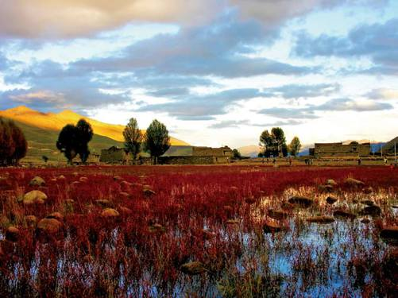
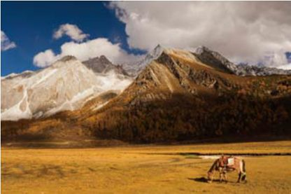
放马天山，这里成了放马亚丁。而你一定会被这里的美丽征服。
如果说海子山的美丽是幽密，红草地的美是绚烂，那么亚丁的美丽便是纯净，是能揭开你尘封记忆的净土。亚丁是三座神山的故乡，在稻城人的眼中，仙乃日山就如观世音菩萨那般慈祥，平坦的峰顶就像一只神奇的雄鹰，庇护着稻城的人们。
亚丁有一股神秘的力量，听说很多人到了这里，看到了仙乃日，都会泪流满面。人们相信，那就是神山的力量。而没有登上山顶的人，也宁愿在山顶积雪融化成的纯净的小溪中，掬一口溪水，让仙乃日的纯净，洗去尘世的污浊与烦恼。珍珠海掩映在仙乃日山下的松林中，碧绿的海子，倒映着如同观世音菩萨般的仙乃日，就像菩萨裙上的玉石，闪烁着迷人而宁静的光彩。
在仙乃日雪峰的脚下，还有一座冲古寺。传说，当年高僧却杰贡觉加错为了终身供奉神山，弘扬佛法，在此修建了寺庙。不料建寺庙时却触怒了雪山上的神灵，于是灾祸降临四周百姓，瘟病流行。却杰贡觉加错知道后，便终日念经祈福，祈求神灵降灾于自己，以免除百姓之灾。后来，他的慈悲感动了神灵，百姓平安，他则身患疯病圆寂。如今那段曲折而动人的历史早已远去，然而，却杰贡觉加错的灵骨却葬在这里，保佑着四周百姓的平安。
稻城的旅行，带给你的不是惊艳的美丽，它没有九寨黄龙那样色彩斑斓，也没有内蒙古草原那样广袤，甚至连长白山上的枫叶也比她惊艳，但只要想起那些静谧而安静的海子，那片红艳似火的草地，还有那里湛湛蓝天，你就会发现，稻城就像通向天堂的一条路，让你“身体在地狱，眼睛在天堂”。
红草地旅游
红草地是稻城美景中最精彩的华章，吸引着很多人慕名而来。然而，想观赏红草地的人要注意，红草地季节性很强，一般从9月底开始变红，到10月达到鼎盛，此时荭草似火，是观赏的最佳时机。到了10月底，荭草便渐渐褪去了火艳的颜色，开始枯萎，而11月份，便消失不见了。所以如果想去红草滩，一定要赶巧哦。
卧龙
Wolong
大 熊 猫 的 故 乡
卧龙自然保护区的风是柔和的，空气是清新的，竹子是婀娜多姿的，就连卧龙山峰都是带着丝丝暖意的。
卧龙自然保护区位于四川省阿坝藏族羌族自治州东南部，东接汶川县映秀镇，西连宝兴、小金县，南与大邑、芦山两县毗邻，北与理县及汶川县草坡乡为邻。看到这个地理位置，以前或许很多人都不以为意，但在经过了5·12的事件后，相信这已经是中国人最熟悉的一个地方了。或许是上天的眷顾，或许是天生宝地，在经过了如此令人惊愕的地震后，卧龙自然保护区依然挺立在那里，展现着往昔的色彩。
卧龙自然保护区包括着卧龙、四姑娘山、夹金山脉等近9245平方千米的土地，是世界上最大、最完整的大熊猫栖息地。据说全世界1/3的野生大熊猫都生活在这里，是地道的“大熊猫故乡”。
冬日里的大熊猫，显得既可怜又可爱。
穿行于卧龙藤蔓缠绕的山峰之中，偶尔能看见独栖的野生大熊猫，在自己的乐园中玩耍、嬉戏。有时它正抱着粗粗的藤蔓荡秋千，有时它正抱着青翠的竹子用力向上爬，有时甚至仰着白白的大肚皮用力地吃着竹子，憨态可掬。
野生的大熊猫虽然可爱，但遇到与否完全凭缘分，半点强求不得。不过即使没有遇到，也不用遗憾，因为在卧龙自然保护区中，还有一所熊猫动物园。
熊猫是一种脆弱而可爱的动物，据说熊猫妈妈如果一次生了双胞胎，便不知道该怎么照顾孩子，往往会抛弃其中一只。而且它们对食物的要求也比较高，稍不注意，便会导致疾病。后来，人们为了更好地照顾熊猫以及培育熊猫，便在保护区内建造了一座熊猫乐园。这里的熊猫没有野生熊猫的怯意，对游人非常亲近，它们在这里悠闲地吃竹子，嬉戏，或团成一个团，来回翻滚，或行走于玩具横梁之上，悠然散步，丝毫不会顾忌旁边人们的注目。
野生的大熊猫常栖息于长江上游各山系的高山深谷中，喜欢在气候温凉潮湿的地方活动。一般，它们活动的区域多在坳沟、山腹洼地、河谷阶地等地方。
其实卧龙不仅是熊猫的乐园，也是一处难得的美景之地，区内峰岭纵横，狭谷深邃，有着最原始古朴的韵味。长年冰雪覆盖的四姑娘山奇峭俊丽，如同头披白纱、姿容俊俏的四位少女，亭亭而立，而山麓之间森林茂密，绿草如茵，清澈的溪流潺潺不绝，宛如一派秀美的南欧风光。由于海拔的迅速上升，卧龙的景致变幻无穷，可谓一山有四季，十里不同天，构成了山峰与沟谷的两重世界。
卧龙自然保护区的色彩也是变幻的，沿着山脚向上行，一路上将看到绿绿的亚热带植物，根据四季变化或黄或红的温带植物，甚至是只有寒冷地区才有的针叶林和高山草甸植被，其中不乏不知名的小花，更会让你体会一种不一样的风景。
海螺沟
Hailuogou
金 海 银 山
走进海螺沟，就像久久离开大海的海螺找到了家，那纯白的冰川，映山的彩霞，是通往内心的那个海洋最直接的方式。
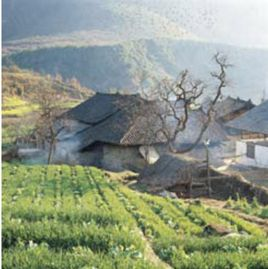
黑瓦、石墙、枯树，其实是美丽的海螺沟真正主人。
海螺沟虽然被称做“沟”，却是一条大峡谷。有关她名字的由来，有一段传奇的故事。传说藏佛中有一位大成就者，叫唐东杰布，他知识渊博、先知聪慧，具有非凡的法力，被人们称为“法王”。唐东杰布法王身边有一个从不离身的法器——海螺，当法王遇到危险或者需要帮助时，只要吹响三次海螺，困难便会迎刃而解。有一段时间，唐东杰布法王在一个大峡谷中修炼，夜晚宿于冰川巨石的岩穴下，早上起床后，便在石穴前口念佛经，并向贡嘎神山跪拜，偶尔吹一声海螺，林中的禽鸟便来石穴前听他念经。后来，唐东杰布法王逝去了，但林中的禽鸟依然按时来石穴前聚集，天长日久，石穴顶部便长出了树木和花草，呈现出一派芸芸众生的景象来，众人都为之惊奇。一日，唐东杰布的弟子在石穴前休息，睡梦中听师父说这条峡谷与佛颇有渊源，应以海螺法器命名。于是，“海螺灵石”的名字流传了下来。
海螺沟位于四川省甘孜藏族自治州东南部，贡嘎山东坡，是青藏高原东缘的极高山地。沿着磨西镇曲曲折折的公路，便攀上了海螺沟的旅程。海螺沟真是一个神秘的地方，公路两侧崇山峻岭间密布着原始森林，其间绿阴苍翠，到处可见挺直而立的冷杉。海螺沟还是一个有灵气的地方，沿着山路随意漫走，无论走到哪里，都可遇见甘甜可口的泉水，它们或是自地下涌出，形成清澈的溪流，或为石下飞瀑，轻柔温婉地落出一幕珠帘。
尽管海螺沟树木葱繁，流水淙淙，但真正震撼人心的却是山顶上那一片冰川。海螺沟海拔只有2850米，却有长达5700米的冰舌噬舔着大地，只见晶莹的冰由高峻的山谷中铺泻而下，溅起了一片冰花，瞬时将寂静的山谷装点成了天宫中的琼楼玉宇，而那冰面上分布着冰面湖、冰裂缝、冰蘑菇、冰洞、冰桥……如神话中的水晶宫一般，闪烁着晶莹透明的光芒。
当第一缕阳光的金黄落在这片冰舌之上时，整个世界仿佛都沸腾了，海螺沟所有的雪峰都披上了金子般的颜色。远方的贡嘎雪山则静静地踞于群峰环簇之中，横亘在天地之间，仿佛一尊巨大的金色神像，散射着万丈的光芒，而海螺沟便静静地笼罩在这片光芒之中。
在这如诗如画的美景中，语言显得苍白无力，唯有闭上双眼，去感受这奇妙的旅程……
海螺沟冰川森林公园，红的耀眼，黑的浓重，白的洁净——美的集合。
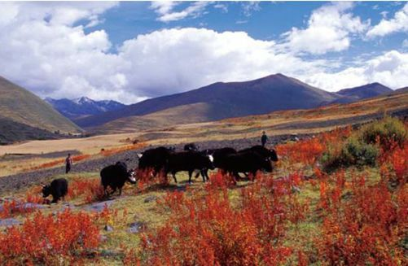
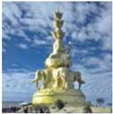
峨眉山金顶的十方普贤金佛。
峨眉山
Mount Emei
山 林 清 音
“美人卷珠帘，深坐蹙蛾眉。”古人说，峨眉山是一幅定格的水墨丹青，绵延起伏的山峦是丹青的留眉，横贯山间的4条秀水是画作飞白的墨黛……
青山若黛，秀水如眉，这往往是峨眉山给人的第一印象。得名峨眉，或许是因为它嶙峋的山峰酷似蛾眉，或许是“水是眼波横，山是眉峰蹙”的悠悠韵致，让你不管是在山间行走，还是寺院听禅，总能感受那一丝丝的妩媚。
天地清明时的峨眉山。
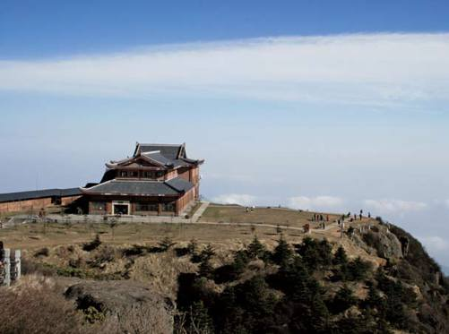
来峨眉的人，多少是因为对心底的那份虔诚。报国寺就坐落在峨眉山麓光明山下，担当着峨眉山进山门户的重任。每当清晨，报国寺中的晨钟便会伴着晨曦响起，这沉闷的钟声穿过清幽的空谷，穿过嶙峋的山林，点破了这幅丹青的宁静，召唤着新一天的到来。熙熙攘攘的人群从四面八方纷至沓来，转眼便隐匿在峨眉的群山之中了。
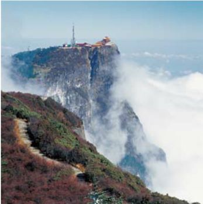
遥望峨眉山金顶，在云雾缭绕中，这里有着锦簇的美丽。
峨眉山峰包括大峨眉、二峨眉、三峨眉、四峨眉，平均海拔都在2500米以上，因此，这里的云看起来便低低的，在山间流动，形成了独一无二的云海。每当晴空万里时，云雾便从千山万壑中轻轻升起，顷刻间，苍茫的云海便如一片巨大而洁白的绒毯般，铺在峨眉的每个角落，温柔而厚润。远方吹来轻轻的风，刹那，云的海洋便翻涌起来，而隐匿在云海中的山峰，犹如一座座小岛般，透出一种神秘的气息。
峨眉金顶的佛光，可谓峨眉一绝。站在峨眉最高的山峰——峨嵋岭的金顶之上，看着早晨灿烂的阳光由东方慢慢升起，绚烂的朝阳斜射在云朵之上，映出一片神奇的色彩。如果此时，你慢慢转身，背对太阳，就会惊奇地发现，在前方氤氲的云雾之中，竟然有一个巨大的，红色在外，紫色在内，中心部分像一面发亮的镜子般的彩色光环，而在光环之中，便是自己清晰的身影。传说，此时无论有多少人，人们所见的始终都是自己的身影。而且人在环中，影随人移，决不分离。
然而，峨眉山的这种惊奇景色，并不是日日可见的。据说，在一年中360多个日子里，出现佛光的时候只有80天，可谓可遇不可求。即使没有缘分，看不到金顶上的佛光，站在山顶上极目远眺，胸襟也会随之开阔。若是晴日，则可仰望悠悠的蓝天，俯视脚底霭霭的白云，千里田园，仿佛在3000多米的高度，也能闻到甜甜的稻香。
眺望遥远的峨眉，心中浮想着有关峨眉的无数个传说，时时刻刻感受着山顶菩萨的感化，心，仿佛也静了下来。
洗象池夜月
峨眉山的洗象池凌驾于钻天坡上，海拔2070米。传说普贤菩萨曾骑象登此山，到这里后，在池中汲水洗象，因此得名“洗象池”。洗象池是观月的佳地，每当云收雾敛，月朗中天，池中便会多了一轮金黄的圆月，悄悄然……
天府之国的情趣生活 Sichuan
天府之国自古富足，悠闲地“喝点跟头酒，打点小麻将，跳点坝坝舞，吃点串串香”，便成了成都寻常百姓生活最真实的写照，也透露出成都人的乐观、大度的幽默个性。无论你来自何方，只要能听懂川音蓉腔，你便会爱上这里。
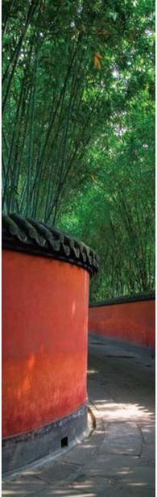
翠绿的竹子掩映着古迹
在成都，有“杜甫草堂”“武侯祠”“都江堰”等古迹可循。而当真正置身，你又会觉得这里翠绿的美更加耀人耳目。
天府之国自古富足，悠闲地“喝点跟头酒，打点小麻将，跳点坝坝舞，吃点串串香”，便成了成都寻常百姓生活最真实的写照，也透露出成都人的乐观、大度的幽默个性。无论你来自何方，只要能听懂川音蓉腔，你便会爱上这里。
成都人的慵懒爱玩是出了名的，夕阳西下，忙完了一天的工作，坐在门口大树下的躺椅上，吹着凉凉的风，端上一大碗冒着红红海椒油的米饭，与邻居好友聊聊天，便成了夏日最好的消遣。
成都人不仅爱玩，更爱吃，即所谓耍得要安逸，吃得要巴适！大街小巷里，如麻雀般大小的馆子随处可见，几近成了成都的特色。
随意走进一家，辣辣的夫妻肺片、辣辣的鱼香脆皮豆腐、辣辣的炝头菜、辣辣的红油抄手……定能让你辣得嗓子冒烟，头冒汗，甚至连嘴巴都失去了知觉，却还是觉得过瘾。麻辣的川菜就像成都的人，有着一股阳刚、劲爽的魅力，只要爱上了，便再也无法逃离。
人们常说“川菜的汤，川戏的腔”，天府之国的菜好吃，戏剧也别有一番特色。这里是戏剧之乡，早在唐代便有了“蜀戏冠天下”的说法。在乾隆时，聪明的成都人把本地的车灯戏，与苏、赣、皖、鄂、陕、甘各地的声腔融合，形成了含有高腔、胡琴、昆腔、灯戏、弹戏五种声腔，并且用独有味道的四川话演绎出来的“川剧”。川剧的唱腔美妙动人，而且曲牌丰富，那高高低低的曲调，幽默风趣的语言，不经意间便将你带入了一个新的世界。
成都小吃街
四川的吃是有了名的，在这里，你随便在哪个街巷里，都能找到好吃的东西，更不用说自助店中好吃不贵的鸳鸯火锅了。当然，这里的特色还是麻和辣，你要小心别被这里的麻辣鸭头弄得嘴都没了知觉。
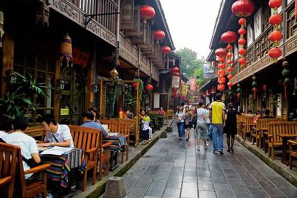
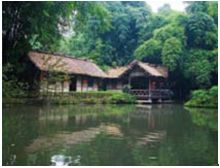
水边的村社
如今川剧舞台上，常见的剧目有数百种，其中唱、念、做、打齐全，妙语幽默连篇，最吸引人的便是变脸、喷火、水袖，加上写意的程式化动作，传达着含蓄着不尽的妙味……
无论是麻辣的川菜，还是韵味独特的川剧，成都人从来都不去计较，他们有着一颗难以想象的宽大胸怀和包容心。或许他们的生活并不高雅，但却活得有滋有味……
重庆
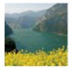
Chongqing·火辣多情
提起重庆，人们所能想起的定是火红的沸腾的火锅，泼辣的重庆妹子，精明的重庆男人，还有那终年雾气缭绕的群山。然而，这并不是重庆的全部，原来这里也有静静的景色，淡淡的情……
小寨天坑
Tiankeng In Xiaozhai
大 地 之 窗
自然是神奇的，在春夏秋冬四季的演变过程中，不知不觉塑造了许多神奇的地理现象，其中就有重庆奉节的小寨村天坑。
小寨天坑位于奉节县的荆竹乡小寨村，是地道的地理学上的“岩溶漏斗地貌”。有关小寨天坑的形成有很多说法，有人说这里曾经是外星人的基地，也有人说它只是地质的一种表现形式，而小寨天坑究竟是如何形成的，就连专家也无法可知。只知道这个海拔1331米、深666.2米、坑口直径622米、坑底直径522米的大坑，犹如一个奇迹般，呈现在人们面前。
绕过写着“天下第一坑”的石碑，真正到了天坑，你会发现，这里四壁陡峭，只有在东北方向的峭壁上，有一条羊肠小道，在竖直的石壁上盘旋环绕直至地心深处。站在天坑顶端的峭壁上，可望见斜对面崖壁上有两间茅屋，那是“二墩”，是天坑一半深的地方。传说这里曾经是某位隐士的居所，很难想象绝壁上的羊肠小路，就是当年隐士与外界的唯一通道。
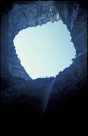
从天坑底端望去，仿佛自己是在井底，天成了盖子。
在悬崖壁的400米深处，有一块斜坡状的台地，站在此处向坑底望去，只见一削千丈的绝壁直插地下，深不见底，令人目眩，仔细聆听，仿佛还有流水的轰隆声，那是坑底下地下河。沿着峭壁上的小路向坑底走去，随处可见青青的小草，鲜艳的野花，伴着湿润的泥土的清香气息，颇让人感到心旷神怡。
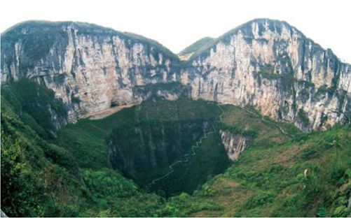
羊肠小路通向天坑内部，得以使人们能够一览这个自然奇迹。
坑底巨大的地下河水，来自于一条被当地人称为“地缝”的地方。这条地缝长达37千米，但最窄处仅有2米，与两边高约900米的峡谷相映，形成气势恢弘的“一线天”。在中国很多景观中都有一线天的景色，但奉节大地缝中惊险奇绝的一线天，足以让其他景色黯然失色。从上面俯瞰，只见群山之中，一片绿色之中，隐约可见一条云雾缭绕的缝隙，而站在坑底抬头仰视，就像大地开的一个天窗，或许这也是小寨天坑被称做“大地之窗”的原因吧。
天坑中不仅有许多暗河，还有四通八达的密洞。这些洞穴奇绝险峻，尽管近些年来各国探险家多次进行探险考察，但目前仍未完全了解天坑中许多洞穴的情况。随意的走进一个洞穴，便可发现清亮的水，连其中的游鱼都看得清清楚楚！
来小寨的天坑，绝对不会让你失望，因为它总是能带给人们奇特的感受与惊喜。
大足北山石刻。这里的石刻雕刻精细，体态俊逸，风格非常独特。
大足石刻
Dazu Rock Carvings
永 不 消 逝 的 乡 情
如果说北方的石窟是豪放粗犷的，那么大足的石刻便是细腻平实的，记录着读书的学子，牧鸡的少女……
大足石刻是重庆市大足县境内摩崖造像艺术的总称，是晚期石窟艺术的代表作，具有鲜明的民族化、生活化特色。大足石刻最初开凿于初唐永徽年间，历经了晚唐、五代，盛于两宋，明清时期亦有所增刻，最终形成了一处规模庞大、艺术精湛的摩崖石刻。
大足是石刻之乡，全县有40多处石刻，其中最著名、规模最大的有宝顶山和北山两处。宝顶山的石刻主要集中在大佛湾，位于圣寿寺左下一个马蹄形的山湾，是一个以佛教、道教故事为主的崖刻。这片崖面长约500米，高约8～25米，在东、南、北三面崖壁上，依次刻着佛传故事、六道轮回、护法神像等故事，其中大多是用一组的雕像来连续表达一个或几个不同内容的佛经故事，而且图文并茂，没有一个雕像重复。
大足宝顶山石刻。这个巨大卧佛周围，还栩栩如生雕刻着许多小雕像，可谓匠心独运。
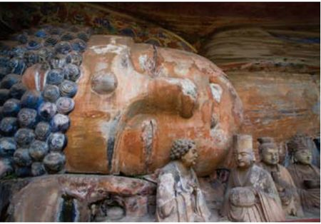
宝山顶石刻中最精彩的，是一幅充满农村生活情趣的牧歌式的石刻——牧牛图。它就像一幅连环画，讲述着牧童驯服老牛的故事。山径崎岖，林泉幽静，牧童或牵牛徐行，或挥鞭驯牛，或坐于老牛背上横吹短笛，或酣然小睡，各类神情栩栩如生，而牛儿在牧童的驯教下，或昂首怒吼，或安然归服，倔强的神情就如同真牛一样。
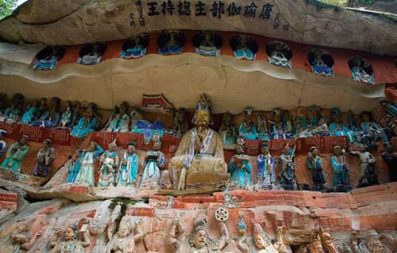
宝顶山石刻
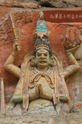
石刻局部
牧鸡女的雕像也是宝山顶石刻中较为突出的一幅，只见一个身穿罗裙的少女，带着甜甜的微笑，身边是一只安静的芦花鸡，农家生活的真实表现跃然图上，整个雕像充满诗意般的乡村风情。
在宝山顶石刻中，还有一些有趣的现象，如在雕刻中，释迦牟尼佛与道教的太上老君和儒家的孔子共坐一龛之中，而传说中的阎罗、电母也混迹其中，形成了一幅有趣的画面，充分显示了当时“儒、道、佛”三教相互融合的背景。
北山崖刻是大足石刻的另一地点，始建于唐朝末期，据说为当时担任昌州刺史的韦君靖开凿。但因历史久远，石刻破坏较多，北山的崖刻不如宝顶山崖刻闻名。或许正是这个原因，人员稀少的北山崖刻反而透出一股苍凉的历史感。
来到北山崖刻，一定要到136号石窟中。此石窟中雕刻的分别是数珠手、日月、玉印和如意珠四尊观音，雕凿精美，神态悠然，颇有佛家淡然平静之风。
而这里，你能深深感受到其中沉淀的历史文化气息……
长江三峡
Three Gorges of the Yangtze River
孩 提 时 代 的 梦 境
长江三峡，这个中国人熟悉到不能再熟悉的名字，承载了中国几千年的梦。从母亲长江的孕育，到触目惊心的三峡险滩，再到烟波浩渺、水平如镜的三峡水库，长江三峡承载的不仅仅是梦想，还有几千年的悠悠历史……
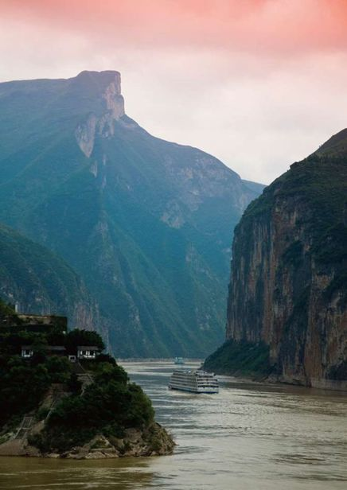
人们常说“长江之雄险，莫过于三峡”，而三峡之名，早已经深深刻入了人们的心里。三峡是万里长江中一段最壮丽的峡谷，东起湖北宜昌的南津关，西至重庆奉节的白帝城，由瞿塘峡、巫峡、西陵峡组成，全长193千米。
站在葛洲坝上，江风吹拂着脸庞，在青山夹岸中，看见一泓滔滔江水从远山蜿蜒曲折流淌下来。远处，一马平川，在一片雾气中，烟波浩渺的长江融入了天尽头。此时此景，每个人都会有一个梦想吧——梦想有一天能沿着这一派山水，一路西去，去看那绝不同于这里的风景。
巫山或许是长江最富浪漫气息的地方，一首“曾经沧海难为水，除却巫山不是云”不知迷倒了多少有情人。穿行于此，能清晰地感受到长江的古朴的美丽，仿佛置身于数千年前的蛮荒时代，淡淡地透着一股难以言喻的气息。
巫峡险峻的烟雾缭绕的景象。
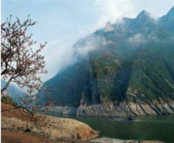
瞿塘峡在三峡中最为险峻，它的西端起于著名的白帝城。
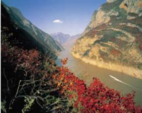
如果说巫峡是秀丽多姿，带着一股浓浓的生活气息，那么瞿塘峡就是雄奇伟岸，会带给你一场惊心动魄的刺激。这段的长江显得尤其狭窄，曾经经过这里的船只，只能忽左忽右地航行，以躲过江底的暗礁。如今大坝的建成，让那段惊险的日子一去不回，只是漫天而涨的江水，也渐渐淹没了两岸的风情。据说，在如今被淹没的山崖上，曾经有一条嵌入岩体的石缝，山与山之间还有石桥相连，那曾经是无数旅行的人的梦想。
夔门是瞿塘峡中最险峻的地方，素有“夔门天下雄”之称。两岸的悬崖峭壁如刀削斧砍般，直立着插入水里，江面更加束窄，水流更加湍急，游行于此，有一种无法言说的震撼。从夔门出来，回首一望，它如一名守卫着巴蜀大地的卫士，屹立在那里，万年不倒。
夕阳渐落，看着两岸雄奇的山峰，点点灯火透着家的温暖，不禁思念起家人，他们也在吃晚饭了吧……
云南
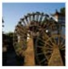
Yunnan·山光水色
云南，一个充满诗情画意的名字，意味着一个充满神奇色彩的地方。她正以自己的方式，向世人诠释着唯美的定义。把目的地选在这里，为了心中的日月，为了圣洁的雪山，为了神秘的摩梭人……
香格里拉
Shangri-La
心 中 的 日 月
传说，在青藏高原雪山深处的某个地方，有一个由八个莲花瓣状的地域组成的王国。这个王国被双层雪山环抱，中央耸立着如雪山般高的卡拉巴王宫，这里没有痛苦、欲望，只有圣洁和智慧，这个王国便是香格里拉。
在佛教的发展史上，香格里拉一直被作为“净土”的最高境界，而被广泛提及。传说中，香格里拉人是最具有智慧的圣人，他们身材高大，拥有着自然的力量，能从人们看不到的地方，通过“地之肚脐”的隐秘通道与世界进行沟通和联系。1933年，詹姆斯·希尔顿在《消失的地平线》中，曾把一个雪山峡谷中的东方世外桃源般的地方称做“SHANGRI-LA”（香格里拉）。60多年后，这个世外桃源“香格里拉”被确认在中国云南省的“屋脊”迪庆高原。香格里拉——SHANGRILA的英文读音，与迪庆高原中甸藏语方言“香格里拉”如出一辙，意为“心中的日月”，源于流传中甸本土几千年的“日月崇拜，万物有灵”的宗教观念。从此，人们的心中有了真正的香格里拉形象。
走进香格里拉，就像走进了天堂，路边狭长的原野上，一片油绿，偶尔有成片的金黄色不知名的草花，成群的牛羊散漫地游荡着。远方的云很低，很厚，紧紧地贴着天边的山峰，让你感觉离天空是如此的近。干净的柏油路边，不时出现几朵淡紫色的杜鹃，在夏风中轻轻摇摆，淡淡地透出宁静的气息。这是什么样的生活哟，远离了人声鼎沸的喧嚣，和心爱的人，听着清风、小草的低语，要不是香格里拉，恐怕只有在梦中才能出现吧。
香格里拉是色彩绚丽的画卷，比江南水乡更加靓丽。
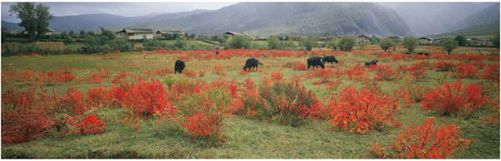
沿着不算宽阔的柏油路慢慢爬升，那片原野渐渐不再那么丰腴，成片的小黄花逐渐消失，取代它们的是花园般的峡谷，满是开着白色花朵的树木，偶尔有一两间小木屋掩映在树丛中，门前有清澈的小溪流过，颇有世外之感。穿行于浓密的白花树下，一片片白色的花瓣伴随着夏风飘然而落，如冬月的雪花般，铺满了树下的草地，溪边的黑土，让碧草、黄花和溪边蓝色的鸢尾都失去了颜色，脚下，点点落英随着潺潺溪水，无声地流向远方，恍惚如同梦境。然而，小屋上袅袅的炊烟却明确地告诉你，这是尘世，这是在香格里拉。敲开小木屋的门，你定然看见一张淳朴的脸，带着明净的笑容，那样的笑容只有最纯净的心灵才能绽放。老乡热情地帮你沏好酥油茶，如果饿了，还会请你吃藏族特有的大饼，尽管语言不通，但这份热情与友好却可以通过热热的酥油茶和暖暖的大饼传递，让香格里拉顿时温暖起来。
香格里拉中甸的一处佛寺，坐落在翠意无限的山坡上。
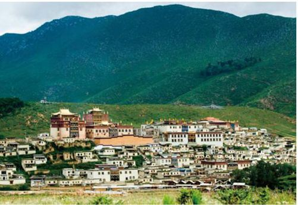
草甸不是香格里拉的主旋律，小雪山的北麓才是传说中香格里拉秘境。石峰延绵峥嵘，巨柏黛色参天，其间松萝倒挂，杜鹃紫红，幽深的峡谷升腾起淡紫色的烟雾，晕染着乡村民谣中的蓝色山脊。当黄昏的阳光穿过雪山上翻涌着的浓厚的云，从天空中斜射下来时，明亮而炽烈地为雪山深谷抹上了浓墨重彩，也点燃了绝壁上怒放的杜鹃。霎时，无比强烈的色泽，无比鲜明的反差，扑面而来，让人震撼。
香格里拉的海子，如天上下凡的星辰，星星点点地撒落在高原上，静谧柔美地躺在香格里拉的怀里。在这里，仿佛可以听到月光倾泻在水里的声音，阳光抚摸树叶的声音，蜜蜂亲吻鲜花的声音，自然与人类沟通的声音。
香格里拉的美食
在香格里拉，有一种叫“寺不”的食品，是纳西族一道远近闻名的风情名菜。“寺不”是纳西语，语意为“吹肝”，即在猪肝中加入精盐、五香粉、姜丝等调料后，撒上花椒粉，使之风干。食用时，再将“寺不”放入汤锅，放入适量辣椒、姜、花椒，用小火慢煮，待熟后，取出切成薄片食用。据说麻辣芬芳，有种特别的味道。
在香格里拉，饮品除了酥油茶外，还有一种颇具特色的索里玛酒，俗称“藏酒”，也叫“藏啤酒”，是用青梨发酵制成的。据说酒味平和、恬淡，但后劲十足。
香格里拉是个令人心动的地方，环境极其宁静优美，但它的天气也是极易变化的。明明还是太阳高照，远远的一朵乌云过来，千丝万缕的，明亮的雨滴便稀稀落落地来了。香格里拉的雨从来都不是柔情的，转眼便能将人浇成落汤鸡般。这时，人们多少有些懊恼，但也不用着急，只需几分钟，乌云过后，明亮的太阳便又回到你的身边，甚至穿过雨云回望，还能看见美丽的彩虹。这就是香格里拉，这个神秘、充满灵气的地方，她有着一股魔力，能让心灵驻足。
来过这里的人，对生命与生活会产生不一样的理解与认知。无论是灿烂的阳光下，高原大地矗立着银装素裹的雪山，奔流着汹涌澎湃的江河，还是险峡深邃的峡谷托起的大山脊梁，一马平川的盆地孕育着的金色果实，都带着那遥远王国的绿色希望，为你，在宁静优美的高原上，映照出蓝天上那片最美丽的彩云。而你在这里，可以慢慢寻觅古老丰博、灿烂光彩的藏文化、纳西文化和各民族丰富的风土历史和文化，因为这里是藏民族和其他各民族南北交往的走廊；也可以细细品味传说中的理想王国香巴拉的清新、平和的韵味；还可以静静融入人神共舞、人与自然和谐共生，香格里拉的悠远情怀……慢慢地，心会跟着平静下来，你会发现，香格里拉，正以其神秘的力量，伴你走过漫长的生命旅途。
这里确实是你向往的那片净土……
这里的藏民，有他们独特的大方与妩媚感觉。
丽江
Lijiang
最 繁 华 的 淡 泊
每一个傍水而居的城市，定然有一种迷人的韵味，丽江也是其中之一。丽江有一种苍凉的、悲壮的味道，但这里的古道、小桥、流水、人家，在白云悠悠的蓝天下，经过阳光的渲染，却洋溢出一股江南水乡般的清新秀丽来。
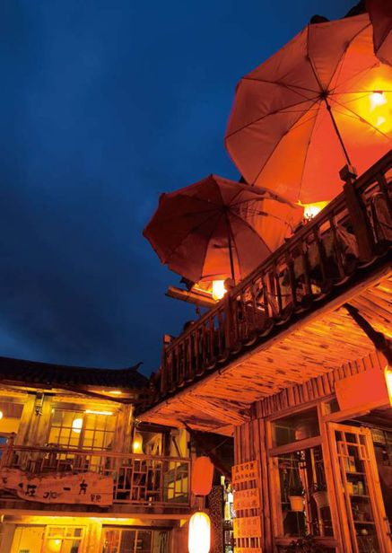
丽江依山傍水，四周青山环绕，尤其是西北处，几座孤山高耸入天，就如同架笔台一般，与城内悠悠的绿水相映生辉，诉说着茶马古道上的历史。穿行于城内的老街，踏着五花石铺砌的街道，你多半会深深爱上这个城市。尽管这里名声在外，小城到处充斥着现代繁忙都市的情景，人来人往，车水马龙，但小城却并没有染上金钱的俗气，即使是现代商业的喧哗与轻浮，也仿佛被小城净化了般，悠悠地透出一股温文尔雅的气息来。街上的人或繁忙或悠闲地出街入巷，挑着担子的农夫，担着新鲜的水果、蔬菜，悠然地走着，没有一丝急迫，偶尔走累了，便在街口放下担子，随意地抽根烟，休息一下；背着行囊的外来行者，也随意在街上漫走着，步履轻松，悠哉随意，形成了街道上一道独特的风景。
来过丽江的人，没有不知道四方街的，它就像这座小城的一个奇特标志，被人们口耳相传着。丽江城内的街道很神秘，虽然密乱如麻，但无论你怎么走，最终都会到达四方街。四方街虽叫“街”，实际上却是一个小广场，四四方方，犹如一颗方方正正的府印，辐镇着这座小城的四方。站在这里观望，大街小巷排列有序，四周店铺客栈环绕，排档鳞次栉比，人声鼎沸，据说这里的市集与物品，已经纠缠了几百年，如今依然纠结着。随着拥挤的人流，进入市集，触摸着散发着古韵的铜器、瓷瓶，穿梭于现代与古代的时光错觉中，不禁轻问自己：这是在哪里？
待日暮，叫卖声、喧哗声随着落日的余晖逐渐远去，古老的青石板上，只留下一片洁白的月光。此时，寻一家茶馆，静静坐下，看着茶杯中升起氤氲的水雾，听着茶馆中人们悠闲而散漫的低语，感受着空气中残留的白日跳动着纳西族轻灵飘逸的风韵，一天就在静谧而安详中安歇了。
如今，水车已经成为一种曾经的象征，坐落在丽江古城。
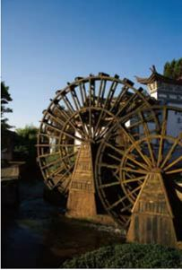
丽江，就是这样一个地方。一股悠然不变的气息，与丽江的自然天成浑若一体，让人感觉如此舒适、淡然，或许这也是人们爱上它的原因。
大理
Dali
那 一 场 风 花 雪 月
欢快而奔腾的泉水，翩翩飞舞的蝴蝶，泉边还有温婉而多情的女子……这个如梦如幻的地方，便是大理。
人们常把大理称为“风花雪月”之地，其实，这并不是指人们所想的烂漫生活的回顾，而是指“下关的风，上关的花，苍山的雪，洱海的月”。
下关的风终年不息，不带一丝灰沙，而且还有一种浪漫的情调。无论冬夏，下关的风都会穿过干净的街道，轻轻地拂过游人的面颊，就像白族姑娘轻柔的衣袖，带着若隐若现的香气，行走于游人之间。尤其令人惊奇的是，行人迎风前行，风儿轻轻吹行人的帽子，本应落在身后的帽子却总落到行人面前，让人百思不得其解。或许还是下关的风太多情吧，才用这种小“伎俩”愉悦行人的心。
下关的风中带着丝丝的馨香与甜蜜，是上关的花儿都盛开了的结果。上关位于大理苍山云弄峰之麓，是一片名副其实的花的海洋。这里的花朵大而丰满，枝头上娇艳的玫瑰，居然朵朵都有碗口大小，而平常所见的娇小的蝴蝶兰，也仿佛吸收了无比鲜美的养料，变成了大大的花瓣，像微笑的老人在风中摇曳，连成了一片灿烂的紫色。在关外的花树村，还有一棵著名的“十里香”花树，花大如莲，传说是吕洞宾吕仙人所种，带着一股仙人的灵气。一般的年份，十里香的花都开12瓣，但到了闰年，花瓣就变成了13瓣，颜色为黄白相间，非常美丽。花落后，结出一种黑而硬的果实，当地人常常用来做朝珠，因此，也叫朝珠花。
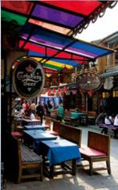
大理古城中的街巷。其色彩有如云南少数民族姑娘身上的衣衫般绚烂。
大理一年四季如春，雪是不容易落到大理的坝子里的，但苍山的顶峰上，却终年覆盖着洁白晶莹的积雪，远远看来，就像一条舞动着的苍龙白背，在大理灿烂阳光的映照下，美丽动人。传说当年瘟疫流行，有一对白族兄妹为了救大家，便到菩萨处学法，归来后，妹妹变成了雪神，与哥哥一起将瘟神赶到了苍山之顶，用千年不融的白雪冻住了瘟神。从此后，苍山的十九峰上便有了一顶像大山的帽子似的积雪。
在苍山之东，有一片如镜般的湖泊，那便是洱海。洱海形似人耳，南北长，东西窄，是一个风光明媚的高原淡水湖泊。据说每到中秋节，居住在洱海周围的人们便要将木船划到洱海里，低头便能看见一轮金月亮藏于水中。而此时，茫茫的大海、天光、云彩、月亮和海水相映在一起，形成一幅优美的图画，令人陶醉。
大理明丽的天空，宁静的洱海，造就了大理一颗宁静的心，使得这里的风、花、雪、月，如此美丽……
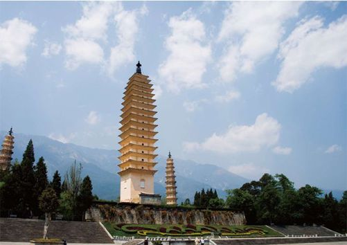
泸沽湖
Lugu Lake
女 儿 国 里 的 明 珠
有一个叫泸沽湖的地方，在纳西族摩梭语中，“泸”是“一个小山沟”，“沽”是“里”的意思，泸沽湖就是“山沟里的小湖”的意思。就是在这个山沟里的小湖边，却有着人们能想象的一切，更有着出乎想象的一切……
泸沽湖坐落在云南与四川交界的宁蒗县北部，占据着50多平方千米的面积，湖水清澈蔚蓝，是云南海拔最高的湖泊，也是中国最深的淡水湖之一，最深处可达93米。
泸沽湖像一颗璀璨的明珠镶嵌在万山丛中，又像一位神秘的仙女存在于高山间。泸沽湖以它的纯洁、美丽给生长在这里的人们带来了欢乐以及浪漫的情结。泸沽湖以及居住在泸沽湖畔的摩梭人，都充满着原始的神秘气息，让人不自觉地产生强烈的好奇感。
泸沽湖内有5个小岛，它们就像一只只绿色的船，飘浮在湖面，一般高出水面15～30米，大小各不相同。岛上全是木楞房，木房沿岛而筑，大门面对湖水，景色迷人。面对泸沽湖清洌的泉水，优美的风光，会顿悟到自己一直所追逐的不过是表面的奢华，真正的享受是来自生活中最微小的细节与震撼。
看似平常的湖水，却孕育了不同寻常的风情与美意。
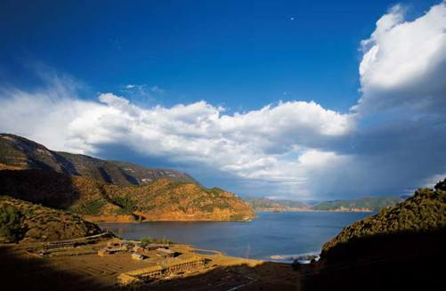
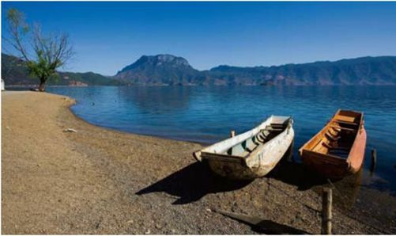
古老的船儿停泊在清清的泸沽湖旁，等待着摩梭人的儿女。
泸沽湖水美，泸沽湖岸上的山也秀，群山之中尤以格姆山最为有名。这座山雄伟高大，就像一头雄狮蹲在湖边，狮头朝向静谧的湖水，倾斜的横岭是它的双脚，静静地守护着泸沽湖畔的女儿们。
泸沽湖之所以吸引人，还因为湖畔住着神秘的摩梭人，这个如今依然保持着“男不婚，女不嫁”走婚习俗的原始民族，为这片土地增添了自然原始的民族风情，也为这片古老的土地染上了一层神秘而美丽的色彩。摩梭人喜爱歌唱，来到这里的人，常常被回荡在美妙绝伦的湖光山色之间的摩梭人的歌声吸引，那是一种纯净、自然、朴实、唯美的声音。听到这样歌声的人，心灵也会静静沉静下来……
而传说，在格姆山上住着一位名叫格姆的女神，她保护着山下各族人民的平安幸福，让百姓多子多孙，让姑娘健壮美丽，让庄稼茂盛，牛羊兴旺。因此生活在这里的摩梭人，在山脚为她建立了神龛，并在每年农历七月二十五日，举行一次盛大的祭祀活动。那时，附近村寨的男女老少，特别是青年们，穿上节日的盛装，带着食品，有的还骑着骏马，到狮子山朝拜。除了祭祖格姆女神外，还要举行盛大的野餐、赛马、对歌等节庆活动。来这里旅行的人，如果赶上这里的节庆活动的话，一定会体验到不一样的泸沽风情。
一舟荡夕阳。其实泸沽湖的美远比这景象中的意蕴悠长。
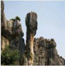
石林一景
石林
Stone Forest
阿 诗 玛 故 乡
“石林最迷人之处并不在于远眺，而在于身历其境。这就是说，你必须钻进石林的深处，窥探它的秘密。”
——洛汀
阿诗玛的名字为许多人铭记是因为电影，但电影也源自这个石林。
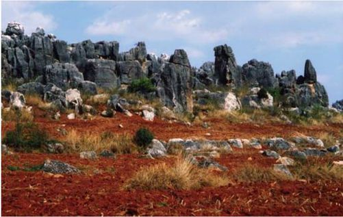
石林，是在云南旅行最不能错过的地方。这里不仅拥有美丽的喀斯特地貌，更是彝族传说中阿诗玛的故乡。它坐落在昆明南边的石林彝族自治县境内，距昆明城86千米。大约3亿年前，石林这个地方还是一片汪洋大海，但不知什么时候起，海底渐渐升起了碳酸盐岩。在经过了数百万年的风吹雨蚀后，逐渐形成了千百座拔地而起的石峰、石竹、石笋。于是，这里就出现了一座座姿态各异、妙趣横生的石头生长的森林，“石林”也由此而得名。
石林旅行
前往石林，可以在昆明火车站的广场，乘旅游专线车，大约需要2小时，便可到达。一般发车时间为早上8～11点，节假日则延长1小时。另外，也可以乘坐昆明到陆良、罗平等地的客车，到石林下，票价相对便宜一些。不过，应设计好时间，最好在中午以前抵达石林，这样可游览得更尽兴。
漫游在石林，人们会情不自禁地被自然界神奇的力量所震慑——千百万座拔地而立的石峰，形成了一幅群峰壁立、千峰聚翠、气势磅礴的石海画。
大石林是石林景区最重要的组成部分，这里最美、最高、最难登的峰是莲花峰。莲花峰“清水出芙蓉，天然去雕饰。”一枝独秀般地高高傲居在“剑池”之滨，要到达莲花峰顶，有小道通往，只是险象重重——这里有块叫“搓板石”的大岩石，浸蚀如搓板，手无处攀扶只能蹲下一步步往前挪，惊险刺激，很多年轻人都以上莲花峰来验证自己的胆量。上了莲花峰后会发现：头顶是蔚蓝的天空，脚下如千柄剑出鞘，峰顶视野宽阔，峥嵘峻峭的石林尽收眼底，这时的你会有“无限风光在险峰”的感觉。
小石林，与大石林肩并肩地相连，却又自成一体。这里的石头不太密集，地面比较平坦。桃、李、梅、茶花……星星点点装扮着四周，陪着圆形水池边一座婀娜的石峰——她背着背篓，深情地眺望着远方。她，就是传说中美丽勤劳的姑娘——“阿诗玛”的化身。传说很久以前，彝族地区叫做阿着底的地方，一个穷苦人家的女儿阿诗玛爱上了诚实勇敢的彝族青年阿黑，霸道的财主热布巴拉的儿子阿支看中了美貌的阿诗玛，抢走了她。后被阿黑救出。就在这对彝族青年回家的路上，山洪暴发，卷走了阿诗玛。阿诗玛化成一座山峰，她深情地眺望远方，似在期盼着她的阿黑哥……
石林，这个数百万年不变的“林海”，仿佛用坚硬的石头，诉说着心中的爱恋与誓言。
剑锋林立，丛丛簇簇。在这里，只有感叹自然的造化。
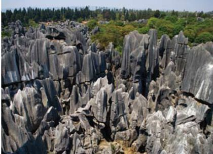
西双版纳
Xishuang Banna
彩 云 之 南
曾经听到过一首很美丽的歌，歌中说“美丽的西双版纳，却留不住我的爸爸”，时常留恋这首歌，因为歌中似乎有种哀伤，诉说了一个平凡而老套的故事，还有那个美丽的地方。
熟悉西双版纳的人，都会叫它“版纳”，是傣语中“一千亩”的意思。
西双版纳的繁华在景洪，它是西双版纳傣族自治州的首府。景洪是一座孔雀之城，不仅因为这里的姑娘衣着鲜艳，有着孔雀般的美丽，还因为这里曾经有过很多很多孔雀。曾经这里是孔雀的天堂，傣族人喜欢孔雀，他们认为孔雀能带给人们吉祥，但长时间捕猎，惊吓孔雀，已经使这里的野生孔雀变得凤毛麟角。如今，景洪的街上依然可以看到很多店铺出售孔雀毛，但多是从家养的孔雀身上取下来的，缺少了野生孔雀独特的魅力。
西双版纳雨林谷，感受真正的热带雨林风情。
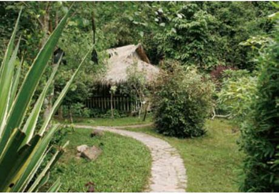
如果说西双版纳是一片颜色的海洋，那么西双版纳傣族姑娘的裙子一定是这片海洋中最亮丽的珍珠，散发着绚烂的色彩。其实傣族姑娘的裙子只是一大块布，裹在身上，简单得很。但就是这样简单的一条裙，却有着世界上最绚烂的色彩，淡红，淡黄，青绿……如此绚烂的颜色，再配上苗条的身材，纯美的容颜，就形成了西双版纳大街小巷中最亮丽的风景。
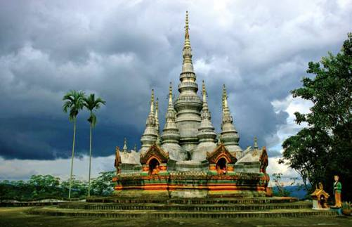
傣族是一个全民信教的民族，而且信的都是佛教中的小乘佛教。
傣族在每年4月中旬都会举办泼水节，这是傣族人民的新年佳节。此时，无论是在竹楼、村寨里，还是在街道、公路上，也不论男女老少，过路行人，到处都是热闹的泼水活动。
在景洪市南，有一朵艳丽的金色兰花，那便是曼景兰傣族村寨。当早晨的雾霭渐渐散去，曼景兰慢慢显露出它的轮廓来，一棵棵高大的芒果树、凤凰木、铁刀木静静伫立，掩映着村寨中清丽淡雅的小竹楼，远远看去，就仿佛是绿色之海中的一叶小舟。说是竹楼，其实它只有一层，下面是高高的木桩，木桩间或堆放着杂物，或养着猪和牛，而上面的竹楼才是傣家真正的休息之地。沿着竹楼前的楼梯，慢慢爬上竹楼，幽暗的光线下，透过一条条竹板拼成的地板，隐约可以看见楼下的猪和牛。
除了绚烂的街市，美丽的傣族女孩，悠悠的村寨，在西双版纳还有茂密的植物王国。这里种植着7000多种热带、亚热带的植物，其中有许多富有情趣的植物，组成了一个天然的“空中花园”。
西双版纳到处都是惊奇，都散发一种静静的绚烂的气息，就像轻柔的雾，淡淡地围绕在每个来西双版纳的人的心里……
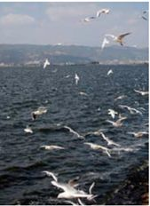
鸟儿是水的女儿，它们装点了关于自由的梦。
滇池
Dian Lake
世 间 水 色
或许是上天的眷顾，让天上的云彩坠落世间，滇池才拥有如此多的色彩；或许是织女的五色锦掉入了这片海一样的湖泊，才勾画出如此美妙的画卷……
滇池古名滇南泽，又名昆明湖，位于昆明市西南约20多千米处。滇池的形成是因为喜马拉雅山地壳运动，导致高原石灰石断层陷落而形成的，有着1886米的海拔。其实，来滇池，并不是因为滇池这传奇的身世，而是因为滇池有着无法言喻的美景。
滇池的周围有数十座山峰，暖暖地将滇池围绕其间，每当有灿烂的阳光时，山环水抱，天光云影，便构成了一幅美丽的天然画卷。如果有缘，恰巧有微风习习，滇池两岸的垂柳轻舞，万顷碧波，便有层层的涟漪，透出一股悠悠的柔情来，而风帆点点，与四周群山、绿树一起倒映于湖中，更增添了几分柔媚和多情。
俯瞰滇池
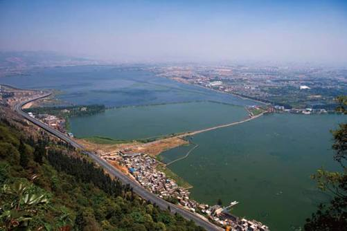
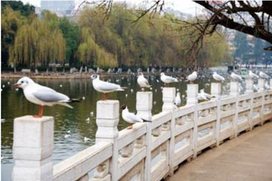
水虽然被污染，但鸟儿却依然在这里停留，给人们带来美。
传说，曾经的滇池有500里，如今看来已经远远没有那么宽阔了，多年来围湖造景和滇池中随处可见的水藻彻底将它污染了。不过，能让惋惜的心有所回报的，便是滇池的红嘴鸥还是那样调皮、可爱。它们时而在天空中盘旋，时而停驻下来，睁着无辜的眼睛看着游人，与远处相互依偎的爱人构成了一幅美好的田园图，让你不禁发出“真美”的感慨。这样蓝的天空，这样美丽的湖水，还有这样可爱的红嘴鸥和幸福的人，只有在画境中才会出现吧。
当清晨第一缕阳光穿过群山时，或者夕阳西下，金黄色的霞光随着轻轻的水波荡漾时，滇池便呈现出她最迷人的魅力，在水面上构筑着人想不到的颜色。而且更令人惊奇的是，随着阳光的不断变化，滇池的颜色也随之变化，一刹那变得粉红，与早上的朝霞争相媲美，一刹那又在粉红中加入了点点蓝，仿佛天空般静谧沉静，待太阳完全跳出群山的遮挡，肆意地将阳光洒在湖面时，滇池便像大海一样，闪着粼粼波光，静静迎接着美好的一天。
在滇池的北岸有一座大观楼，是欣赏滇池最好的地方。站在楼上，凭栏远眺，滇池的美景尽收眼底。在大观楼大门的两侧，悬挂着清代寒士孙冉翁所撰的，一副被誉为“古今第一”的长联。这副长联有180字，整联为颜体楷书，严谨浑厚，被视为云南最具价值的艺术瑰宝之一。据说，写这副对联的孙冉翁，是清代一介寒士，家境清贫，并在饥寒交迫中逝去。但他那枝生花妙笔写下的大观楼长联，却留了下来，成为今日滇池最宝贵的文化遗产。或许这也是滇池真正的秘密吧，不管湖光山色多么壮丽，水面多么开阔，不管颜色会多么绚烂，那种经历了数百年的历史气息是不变的，只能越来越醇厚……
春城昆明
昆明位于云贵高原中部，海拔1890米，风景秀丽，有翠湖、西山公园、黑龙潭、筇竹寺等名胜古迹，而且昆明气候温和，一年四季如春，永远呈现的都是一片繁花绚烂的景象。昆明的百花，以茶花、玉兰、杜鹃、报春为主，被称作昆明四大名花，其中茶花最享盛名。
贵州

Guizhou·灵动俊秀
贵州省是一个让人激动的地方！贵州的山，层峦叠嶂，峰耸岭峻，气势磅礴。贵州的人民，能歌善舞，热情好客……她以其独特韵味存在着——贫瘠而不荒凉，简洁而不单调——虽无宏伟的气势，却不乏生动的灵性。
黄果树瀑布
Huangguoshu Waterfall
飞 天 银 瀑
这里山、水、瀑、洞、峰、林为一体，既有着千姿百态的绚丽，也有如缎带般的飘然。
清清的水流，是那飞瀑的另一种醉人表达。
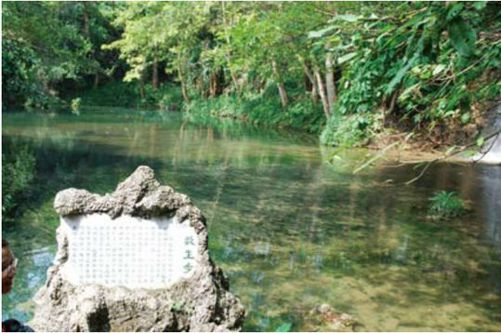
黄果树瀑布位于贵州布依苗族自治县县城西南，是亚洲第一大瀑布。瀑布高77.8米，宽101米，掩映在一片茂密的翠竹之中，犹如一条白色的缎带，由天而降，带着雄伟的气势，呼啸而来。无论你是慕名而来，还是随意而行，来到黄果树瀑布公园都能感受瀑布的气息，远远的，它怒吼的声音便冲击着耳膜，让你忍不住想去看个究竟。沿着公园中长满青苔的石阶而上，远远地便看见大瀑布挂在那里，水珠纷溅，飞沫翻涌，如捣珠崩玉般地汹涌而下，其中烟雾腾空，气势非常雄伟。
黄果树瀑布
自贵阳去黄果树瀑布有专线的旅游车，往返大概需要60元。游览黄果树瀑布的最佳时间，应是每年的7、8月份，此时水量丰富，气势磅礴，而其他时间多为枯水期，瀑布缺乏磅礴的气势。另外，游览瀑布的时候，最好自带雨伞，否则会被淋湿。
而瀑布下一潭碧水，清澈见底，仿佛姑娘的眼，静静地望着你。然而，当水流从70多米的悬崖飞跌而下，直入深深的潭底，潭水也会怒腾翻升，水流喷溅的水花，如玉，如雪，如珍珠……美丽非常。如果丽日当空，在阳光折射下，瀑布会银光闪闪，一抹绚丽无比的彩虹斜挂在瀑布上，此时的瀑布，可谓是美妙绝伦。
黄果树瀑布最美是在雨后。当雨后初霁，云雾还未散去，缥缥缈缈地围绕在瀑布左右，瀑布两边油绿的翠竹随意轻摇，芭蕉漫不经心地开着，此时，如果不是似台风呼啸、山洪决堤、万马奔腾般的怒吼声在提醒，很难想象自己是身在人间。
或许黄果树瀑布真的是人间仙境，一如《西游记》中的花果山，所以才会有水帘洞。水帘洞在黄果树瀑布40米至47米的高度上，离观瀑亭并不远。这个隐藏在瀑布后的洞，全长有134米，其中有6个洞窗、5个洞厅、3股洞泉和6个通道。尽管水帘洞前有一帘飞瀑掩盖，但当你沿着一条小路，走到瀑布背面时，此水帘洞便呈现在你眼前。漫步于洞中，如同置身于云雾之中，身边流水潺潺，云雾缭绕，具有一种迷幻而朦胧的美丽。
蓦然回头，透过水帘洞小小的洞窗，黄果树瀑布近在咫尺，犹如一幅美丽的山水画，镶嵌在层次分明的画框之中……
飞涌的瀑布边的震撼，也许真可以说是振聋发聩。
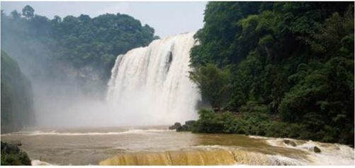
梵净山
Mount Fanjing
奇 雄 俊 丽
在佛经故事中，传说有一方乐土，能够净化所有的灵魂，人们称之为“梵净之地”。而在贵州铜陵的深山中，竟然真的有一个梵净山……
梵净山是武陵山脉的主峰，位于贵州省铜仁地区，具有“武陵第一峰”的美誉。它巍峨雄伟，聚集了石、树、云、风的极致景观。在它近八百里的净土上，群峰耸峙，莽林幽壑，云海变幻，气象万千。梵净山又是一座充满神秘色彩而又雄奇伟岸的山峰，早在明代以前，便被开辟成为了古佛道场，因此，它的名字和故事一直在南国久久流传。
梵净山奇异的石头组合。若然人工，或许还不能如此大胆。
梵净山的山体核心有三大顶峰，分别是老金顶、新金顶、凤凰山，其中凤凰山最高，海拔为2570米。但梵净山最美的地方，却在老金顶。站在山顶之上，极目远眺，武陵山脉雄奇俊秀的面貌一览无余，其间白云缥缈，浓密处犹如堆积的新絮，稀薄处犹如西施浣洗的轻纱，在山风中奔腾汹涌。
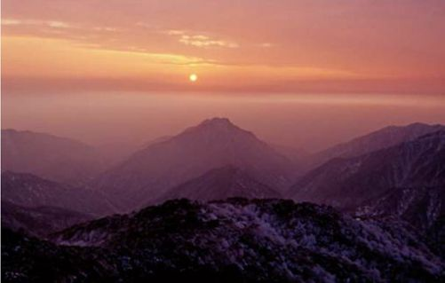
梵净山沐浴在日出晨光中。
峰回路转，沿着老金顶上的石阶向南，一条如牛尾般细长的小河便横在眼前。在这条小河的源头处，耸立着一座海拔1748.2米，如剑劈斧砍的石山，远远望去，俨然一巨人正在仰望，相传此石为太子所化，故称“太子石”。传说，明朝万历年间一位皇妃一心向佛，来此山修行。正当皇妃修身成功、将身成佛的时候，她的儿子小皇子却因思念母亲，悄悄溜出皇宫，历经艰难险阻到达这里。佛祖担心皇子阻碍母亲成佛，便用定身法，将小皇子定在了牛尾河谷里，并在他头顶上栽了一棵菩提树。因为菩提是梵净山的镇山之宝，佛祖曾在此树下修身成佛，片片叶上都有一尊佛祖像，小皇子便不再长高，天长日久，便化为石……此情此景，谁能不为小皇子的遭遇而叹息呢？或许就连金顶上的“飞仙桥”亦在感慨吧，成佛成仙和母子团圆到底哪个才是解脱，才是真正的获得幸福呢？没有人能给出答案……
由于皇妃修行成佛，如今的梵净山上香烟缭绕，寺庙殿堂星罗棋布，释佛殿、弥勒殿前每日来拜佛的人络绎不绝，或许这也是人们的矛盾吧，一面希望脱离苦海，得到神佛庇佑，一面却有割舍不断的亲情。然而，也正是因为人生有了这样的牵挂与矛盾，人们才生活得如此完整吧……
织金洞
Zhijin Cave
平 凡 世 界 的 莹 彩
只有来过这里，才能感受到洞里的奇，只有从地下看世界，才会发现，原来洞中别有天……
织织金洞坐落在贵州乌江源流之一的六冲河南岸，是一个地地道道的地下溶洞。曾经它被称做是“打鸡洞”，传说是苗族杀鸡祭神的地方，如今它早已洗去了往日的那层神秘，完全展现在人们面前。
织金洞石笋、石柱、石芽等四十余处景观，千姿百态。
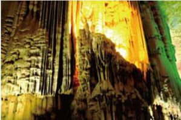
或许是织金洞地处偏远，“养在深闺人未识”的缘故，这个天下第一的大溶洞，竟然显得有些寂寥。穿过像一张大大嘴巴的洞口沿着石阶而下，一对雄狮迎面而坐，笑容可掬，你便进入了织金洞的“迎宾厅”。此时，若你抬头转望，定然会发现洞顶上那个圆形的小天窗，那是织金洞的小洞口。传说如果有缘，便能看到阳光、月光同时由大洞口和小天窗入洞，交相辉映，可谓“日月同辉”。但也有另外一种看法，当人进入迎宾厅后，回头转望，大大的洞口就像巨大的太阳，温暖而刺眼，而洞顶的小天窗就像是头顶的月亮，温和而清冷地照着人们的影子，因此称之为“日月同辉”。
沿着石阶，渐渐走向织金洞深处，一股凉气悠然而来，为这个炎热的夏季带来了一丝清爽。伴随着清凉的温度，织金洞的奇景也渐渐直逼眼底，令人应接不暇。织金洞已勘察的长度有12.1千米，而洞内的总面积有70万平方米，被分割成了高高低低11个大厅和47个厅堂，中间以蜿蜒曲折的通道相连。在这里，你可以在“南天门”下，仰望苍穹，体会一登“南天”的喜悦，也可以身居于虚无缥缈的“云雾”之中，感受那神秘莫测的仙境……
在织金洞众多千奇百怪的石中，最吸引人的是一个叫“卷曲石”的景致。人们常说石坚硬，水柔软，但卷曲石完全颠覆了人们的看法，它纤细玲珑，通体透明晶莹如玉，纤细之处如水中的细草，曲曲弯弯，随着水流而东西弯转，让你很难想象那是一块石。相反，卷曲石周边的水，落在地上，却有着钢珠落地般的清脆，让人不禁感叹自然的神奇与魅力。
尽管织金洞带给人们一种前所未有的神奇，但在这些神奇的背后，却又能感受到那真实的生活。
灯光也许造就了这里的无边变幻，但本质上，还是织金洞本身有着无穷魅力。
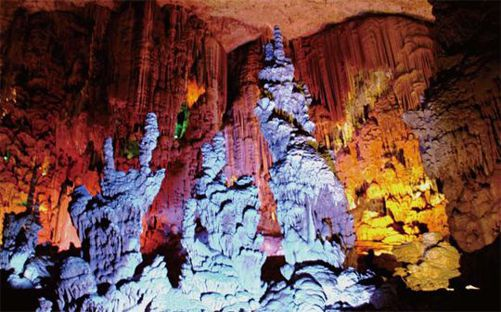
广西
Guangxi·绚烂迷蒙
绚烂多彩的民俗风情、刘三姐的美丽传说，以及秀美怡人的自然风景，完美地向人们展现了广西的风情。
漓江
Lijiang River
烟 雨 迷 梦
百里漓江更像是一幅典型的中国水墨画，一点点，一滴滴，晕染在洁白的宣纸上，有着几分清晰，几分朦胧……
漓江就像一个如诗般的梦境：“小小竹排江中游，巍巍青山两岸走，雄鹰展翅飞，哪怕风雨骤……”而漓江就像这样的一首歌，在静静的流水中，激起人奋斗的雄心。
立于漓江边，伸手抚摸那些滚圆的石头，看着漓江中那晃动着的水影，像是在向远方的人诉说着褪去光芒的质朴。原来漓江也渴望被亲近，一如来这里的人。
小小竹排，舟行水上，这种感觉才是游人到此所最想体验。
撑着一张小筏，行游于漓江之上，看着那清澈见底的漓江水，忍不住想：要是生在漓江，活在漓江，那该有多好！心还在追寻那一丝丝的可能，却见前方山间一条小路，通往了桃花吐艳、绿竹滴翠的桃源村。无奈峭壁插江，像刀劈斧砍一般矗立在江岸，隔断了那条繁花绚烂的小路。然而，人们撑着一张小筏，悠悠而渡，转过那座悬崖，便到了那个桃花盛开的世外之地。漓江真是一个如诗般的梦境吧，所以就连这样的峰回路转，也有着一个充满诗意的名字——半江渡。
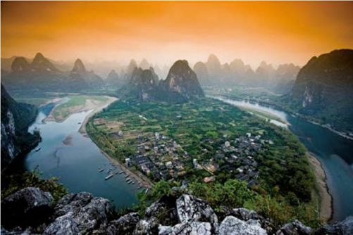
悠悠桂林漓江山水，永远如诗如画。
走过桃源，小竹筏慢慢划过杨堤飞瀑、二郎峡，迎面便是百里画廊。在巨大的峭壁上，一条条不同颜色的石纹纵横交错，形成了一幅幅神秘的图画。细细看来，仿佛是一匹匹正在奔腾的骏马，或扬蹄飞奔，或昂首嘶鸣……这就是传说中的九马画山。相传，如果在3分钟内看出壁上有9匹马，今后定能成为状元郎；如果能看出5匹，就可成为秀才。这个传说，让很多望子成龙的父母，以及渴望学业有成的年轻人慕名而来。
漓江鱼
漓江水美，长年清澈见底，而养育的漓江鱼也以肥、嫩、鲜、滑著称，很多人到这里都想尝尝酸辣漓江鱼的味道。但近些年来，大量违法捕获漓江鱼，使得漓江的生态受到了极大的破坏，漓江鱼也大大减产，而人们仍然在大量捕获漓江鱼，甚至不惜使用灭绝性捕鱼方式。因此，到漓江的人，尽量不要再吃漓江鱼。只有保护好漓江的环境，漓江才能给人们一个优美的梦境。
渡过画壁，小筏悠悠荡进了黄布滩。这里的水底有一块米黄色的大石板，透过碧绿的江水，岸上青翠的山峰，翠绿的山竹，以及这片小筏和筏上的人，全都倒映在米黄色的滩底之布上，勾画出一幅绝美的画面。
这就是漓江，这个拥有神奇魔力的地方，无论谁走进了这里，都会自然地融于其中，成为“装饰了别人梦”的风景。
桂林山水甲天下 Guangxi
提到桂林，很多时候想起的便是桂林的山水。还记得儿时学过的《桂林山水歌》，歌中唱道：“云中的神呵，雾中的仙，神姿仙态桂林的山！情一样深呵，梦一样美，如情似梦漓江的水！”其实，远离了漓江，桂林依然有着独有的美丽。
桂林是梦幻的，走进这里，就像走进了连绵不断的画卷；桂林是温柔的，云雾缭绕中，山水相映成趣。桂林就像一幅长长的山水画，画中有俊秀的山峰，清澈的河水，隐约的小镇，还有如链似带的梯田，处处透出一股灵动的气息。
阳朔在桂林市郊大约60千米处，有着别样的风情。一踏进阳朔的土地，便能看见山水的精彩。清幽的乡间小路，嫩绿的草木混着金黄的油菜，粉红的桃花散发着淡淡的香气，偶尔在远处冒出两三间围有栅栏的茅草屋，给人一种逃脱于世外，静静回味的感觉。
在阳朔，最能体会静水深流的便是遇龙河了。它安静而悠长，是漂流的最好地方。在这里，你可以体会到阳朔另一种风味，也可以体会到河水的另一种快乐。坐上一扁竹筏，随着任意的流水漂流，绿油油的稻田，嶙峋的山丘，星罗棋布的房屋，岸上窜来窜去的小狗，美得让人心生爱意……河道上的宽宽窄窄、急势缓势，耳边传来人们的惊叹声……恍恍惚惚中，回头望去：蓝天白云，青山碧水，茅舍农家，如此的美妙，如此的惬意，如果能跟心爱的人在这美景中穿行一次，生命便有了新的意义……
在桂林乡郊的平乡，有一片非常大的梯田，那里如链似带，任由绿油油的蔬菜、黑黝黝的坝埂从山脚盘绕到山顶。那些由黑黑细细的田埂围绕起来的梯田，如螺似塔般层层叠叠地坐落在那里，高低错落。而那黑黑细细的田埂，则如仙女遗落的飘带，如行云流水般潇洒柔畅。据说这片梯田，从元朝时期就开始建了，直到清代初期才完工，距今已有650多年的历史了。或许当时开山造田的祖先们也没有想到，当年生命的保障——梯田，如今竟变成了如此妩媚潇洒的曲线世界。在漫长的岁月中，很多东西都被无声无息地改变了，就像尧山。
桂林的山水总有一种说不出的情绪，或许只有“群峰倒影山浮水，无山无水不入神”，才是桂林山水最准确的评价。
桂林之山，独具特色，使人一望便知。
桂林溶洞
大自然神奇地造就了溶洞，为山水的桂林又增添了许多妩媚的气质。
农家灿灿的丰收景象。
黄姚
Huangyao
静 如 处 子 的 桃 源
黄姚，在烟雨迷蒙中呈现着自己的本色，静静的，就像一个刚刚出生的婴儿，不经意间，已经虏获了人们的心……
黄姚是这样的一个地方：当早上的太阳升起，阳光透过林间树叶的缝隙，暖暖地洒落在小溪上，水面上还残留着夜晚留下的薄薄雾气，充满着诗意。黄姚的美丽，无须刻意寻找，它们沉淀在经年的历史里。
黄姚有8条老街，都是由青色石板镶嵌而成，近看则平滑如镜，远观则如凝固的溪流。传说，最早的那段石板街距今已有300多年的历史了，人们都叫它“山根寨”。如今的山根寨，经过了历史的洗刷，中间的石板早已踩低了，而两边的石板还尽力保持原来的样子，于是形成了有名的槽形街。人们走在这里，就像走在一个石槽中，有一种说不出的情愫。
在黄姚，散发着古朴气息的还有那些路边的宗祠。这里的宗祠多为两层砖瓦结构，其中墙壁、梁柱、斗拱、小廊、天花、木窗上都有精致的雕刻，可谓千姿百态，散发着独特的风韵。黄姚的宗祠有11座，但每一座都雄伟壮丽，装饰考究。
也许第一眼你会觉得这里很古老，但时间长了，你会懂这里的悠然。
吴氏宗祠是黄姚宗祠中比较有名的一个，不仅供奉着吴氏的先祖，也有专门供读书的书屋。走进这里，远远地就能看见吴氏宗祠那宽阔的门廊，沿着门廊前的阶梯攀登而上，穿过门廊，一个近乎完美而庄严的院落便展现在眼前。院落中有一个大天井，正对着宗祠中高大宽阔的正座，预示着吴氏家族不可动摇的地位。天井两旁是小小的花园，此时菊花正茂，寄托了后世对先祖深深的纪念。在宗祠的墙壁上，画着“万般皆下品，唯有读书高”的壁画，据说当年用的是德国的颜料，虽经历百年，如今依然光彩依旧。

大山包围中的黄姚，是鳞次栉比的经典曾经。
如果一个小镇没有桥，便逊色了很多，而黄姚的桥几乎成了黄姚的特色。带龙桥始建于万历年间，当时它只是普通的一座桥，直到清乾隆二十三年重修时，才按照“带龙桥”之名，在原桥上又建带龙桥一座。如今人们所看到的带龙桥，实际上是两桥合一的结果。
黄姚的古戏台
黄姚的古戏台是黄姚最著名的风景线之一，有着四百多年的历史。古戏台分前后台两部分，是一个完整的“凸”字形。台基全用大青石板砌成，舞台铺以木板，前后台间有板屏。台下四角放置了四口大水缸，据说具有音响的效果。前台上有朱漆的木栏杆，天花板上绘着各种花草虫蝶。这座古戏台大部分时间都是安静的，只有每年的三月初三才会热闹起来，因为这是黄姚唱大戏的时候。
带龙桥最美的时候是雨时。当夏季的微风，卷着丝丝细雨洒落在大地上时，站在带龙桥上，远处烟雨迷蒙，青山如黛，而眼前是桥下奔腾的流水，安静的民居，一种独立小桥风满袖的淡然油然而来，充满了天地间。而此时的黄姚，便静静地散发着一阵清香，犹如一卷尘封已久的诗集，蓦然被打开的那一刻，闪电般带领人们进入了另一个世界……
大圩
Daxu
千 年 古 镇
踏着古朴的青石板，走过陈旧的石拱桥和古色古香的街道，一股历史与现实的气息迎面而来，或许再也没有一个古镇，能够像大圩一样，把昔日的辉煌与优美的景色如此美丽地交织。
大圩是地地道道的千年古镇，传说是从秦始皇开灵渠，使湘漓连接之后逐渐繁荣的。
曾经战火纷飞，大圩经历了难以言语的苦难，如今那些苦难却成了大圩最宝贵的东西，让它散发出一种幽静古朴的韵味来。
大圩的老房子是历史最好的见证，那些青砖青瓦的两层小楼，与漓江旁的老街——老圩街、地灵街、鼓楼街、泗瀛街……交相辉映，形成了一幅难得的江南水墨画。
除了老房子，大圩还有一道亮丽的风景线，那便是古东村蝴蝶山麓的八瀑九潭瀑布群了。那里的瀑布虽然不大，却是别有一番滋味。两岸林木葱郁，鸟语花香，伴随着潺潺的流水声，令人不禁要感叹——只有蓬莱仙境才能有这样的美景吧！
大圩熊村水塘